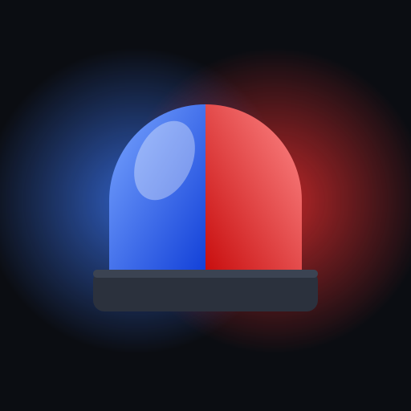

Film, video ve eğlence için ışık ve siren efektleri
Bu uygulama yalnızca eğlence, oyun ve film çekimi içindir. Trafikte veya araç camında kullanmak yasa dışıdır.
Yanıp sönen parlak ışıklar içerir. Işığa duyarlı epilepsiniz varsa kullanmayın; baş dönmesi, görme bozukluğu veya kas seğirmesi olursa hemen durdurun.
Bir tema seçin
Yalnızca eğlence, oyun ve film/video çekimi içindir. Trafikte kullanmayın.